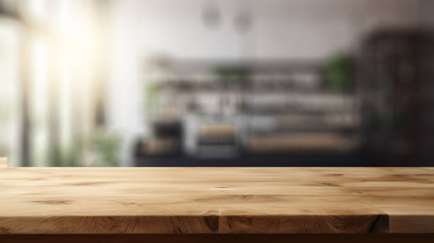
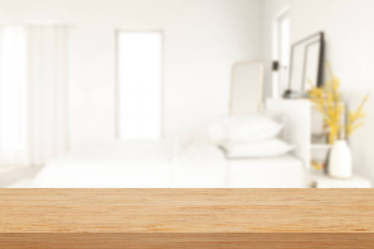

Hurlock Maryland
info@ohmykitchen.pro
Hurlock Maryland
info@ohmykitchen.pro

Enhance your Hurlock Maryland home with durable and stylish countertops. Wide range of materials, precise installations, and unmatched customer care for a seamless remodeling experience.
Click Here To Call Us (877) 848-1711Transform your home or business with the finest countertop services in Hurlock Maryland . At our company, we specialize in delivering high-quality countertops that blend elegance, functionality, and durability. Whether you’re renovating your kitchen, bathroom, or commercial space, our expert team offers tailored solutions to meet your unique needs.
We provide a wide selection of materials, including granite, quartz, marble, and laminate countertops. Each material is meticulously sourced to ensure exceptional quality and lasting beauty. Our skilled craftsmen focus on precise measurements and seamless installations, ensuring a perfect fit for every project. With years of experience, we pride ourselves on combining top-notch craftsmanship with unparalleled customer satisfaction.
Why choose us? We stand out in Hurlock Maryland for offering competitive pricing, fast turnaround times, and personalized consultations to bring your vision to life. From choosing the ideal material to the final installation, our team guides you every step of the way.
Upgrade your space with countertops that elevate both aesthetics and functionality. Contact us today to schedule a consultation in Hurlock Maryland and discover why homeowners and businesses trust us for their countertop needs. Let us create a stunning centerpiece for your home or office that you’ll enjoy for years to come.
Residential & commercial Countertops
Quality services at affordable prices
Immediate 24/ 7 emergency services


Choosing the right countertop for your kitchen or bathroom in Hurlock Maryland is a crucial decision that affects both the functionality and aesthetic of your space. With a wide variety of materials available, it's essential to understand your options to make an informed choice.
Consider Durability and Maintenance: For high-traffic areas like kitchens, granite and quartz countertops are popular due to their durability and low-maintenance qualities. If you're looking for something more eco-friendly, consider recycled materials or bamboo. For bathrooms, materials like marble or engineered stone provide both elegance and resilience to moisture.
Aesthetic Appeal: Your countertop should complement the overall design of your kitchen or bathroom. Light-colored granite or quartz can brighten up a space, while dark tones offer a sleek, modern look. Be sure to consider your cabinet and flooring choices to create a cohesive design that enhances your home's style.
Budget and Installation: The cost of materials can vary widely, so understanding your budget is key. While natural stone may be more expensive, engineered options like laminate or solid surface countertops can offer a more affordable alternative. Be sure to also factor in installation costs when budgeting for your countertop.
Consult a Professional: Choosing the right countertop requires careful thought and expertise. For the best results in Hurlock Maryland consult with a local professional who can help you select and install the perfect countertop for your kitchen or bathroom needs.
Residential & commercial Countertops
Quality services at affordable prices
Immediate 24/ 7 emergency services
Enhance your home bar experience with our stylish and functional countertop solutions . A well-designed home bar needs beautiful countertops that not only serve a practical purpose but also reflect your personal style. Our team specializes in selecting and installing high-quality countertops tailored for home bars.
From trendy quartz and polished concrete to classic granite and elegant marble, we offer a diverse range of materials to choose from. We understand that each style brings unique benefits, such as durability or easy cleaning, and we’re here to help you find the perfect match for your home's aesthetics and your lifestyle.
Our installation process is meticulous, ensuring that every aspect of your countertops is precisely placed for both functionality and visual appeal. We also provide customization options, including edge designs and integrated features like drink coolers or cutting boards, to make your home bar more functional.
By selecting our countertops for your home bar, you’re investing in a space that’s not only beautiful but also enhances your entertaining experience. Enjoy the art of mixology in a well-designed area that embodies luxury and style.

For the environmentally conscious consumer, we offer a variety of eco-friendly countertop options in Hurlock Maryland . Our commitment to sustainability means providing beautiful surfaces that don't compromise the planet’s health.
Why choose our eco-friendly options? We offer a range of sustainable materials, such as recycled glass, bamboo, and reclaimed wood, which combine style with environmental responsibility. Our team is dedicated to educating our customers on the benefits of eco-friendly choices and ensuring you find the perfect fit for your home. With our expertise, you can create an elegant and sustainable space that reflects your commitment to the environment. Choose us to transform your home with eco-friendly countertops that make a positive impact!

Elevate your home with our luxury countertop installation services in Hurlock Maryland specializing in high-end materials that exude elegance and sophistication. We provide exquisite options, including rare stones and innovative composites, designed for discerning clients who value craftsmanship and beauty.
Our team works closely with you to understand your vision and ensure the final product perfectly integrates with your home’s design. From unique granite slabs to stunning quartzite and onyx, each installation is customized to elevate your space and reflect your style.
Choosing us for your luxury countertop installation means collaborating with professionals who are dedicated to excellence. Our commitment to sourcing high-quality materials and providing expert installation creates extraordinary spaces that speak volumes about superior taste and style.

In the fast-paced world of commercial kitchens, having the right countertop surface is essential for both functionality and durability. Our commercial kitchen countertop installation services focus on providing robust and efficient surfaces suitable for the rigors of restaurant and catering environments.
We work with various materials, including stainless steel, quartz, and solid surface, ensuring that your kitchen is equipped to handle high volumes of use. Our experts understand industry standards and regulations, allowing us to design and install countertops that meet your specific operational needs.
Choosing us for your commercial countertops means partnering with a knowledgeable team dedicated to your success. Our commitment to quality craftsmanship and timely service minimizes disruptions to your operations, ensuring you have reliable surfaces that enhance productivity and workflow.

Elevate your retail space with our custom countertop installation services . Countertops in retail environments not only need to be functional but also need to attract customers and complement your brand's identity. Our team specializes in creating visually appealing and practical countertop solutions tailored to retail settings.
We offer a variety of materials that combine form with function, including laminate, solid surface, and concrete. Each material can be customized in terms of color, texture, and edge design, allowing you to create a unique atmosphere that resonates with your brand.
Our experienced installers ensure that each countertop fits perfectly within your space while adhering to the highest standards of quality and craftsmanship. By focusing on aesthetics and durability, we aim to enhance the overall shopping experience for your customers.
With our retail store countertop solutions, you’re making a valuable investment in your business's presentation and functionality. Trust us to help you create an inviting and stylish retail environment that draws in customers.
In the hospitality industry, countertops play a vital role in creating an inviting and functional atmosphere for guests. Our hotel and restaurant countertop solutions focus on providing stylish and durable surfaces that enhance both service and aesthetic appeal.
We understand that each hotel or restaurant has a unique brand identity, and our team works diligently to craft countertops that reflect this. Whether you need elegant bar surfaces or practical buffet stations, we have solutions tailored to your specific requirements.
Choosing us for your hospitality countertops ensures you receive exceptional quality and service. Our commitment to timely installations and high-quality materials means you can focus on providing a great experience for your guests while we handle the details.

Create a professional and inviting workspace with our office countertop installation services in Hurlock Maryland . Countertops in office environments play a crucial role in functionality and aesthetics, which is why our team focuses on providing high-quality materials designed to enhance your office's appearance and usability.
We offer a variety of materials, including laminate, quartz, and solid surface options, ensuring that every surface is not just beautiful but also suited for daily use. Our expert team collaborates with you to design and install countertops that reflect your corporate identity while maximizing workspace efficiency.
Whether you need reception desks, meeting room tables, or break room surfaces, we provide tailored solutions that meet your specific requirements. We ensure a smooth installation process with minimal disruption to your daily operations, so you can focus on what you do best.
When you choose our office countertop installation, you’re investing in a professional image that fosters productivity and impresses clients. Trust us to deliver exceptional results that enhance your workspace.

For medical and laboratory environments, the right countertops are essential for both functionality and safety. Our countertop installation services focus on providing surfaces that meet the stringent standards required in these sensitive settings.
We offer a variety of materials, including solid surface materials and stainless steel, designed to withstand rigorous use while being easy to clean and disinfect. Our team works closely with medical professionals and lab managers to design and install countertops that promote efficiency and compliance with health regulations.
We understand that durability and precision are paramount in these environments. Our expert installation process ensures that every countertop is fitted perfectly to provide a safe and functional workspace.
Invest in our countertops for medical and laboratory settings to create an environment that prioritizes hygiene and efficiency. Experience our commitment to quality, service, and expertise in delivering specialized solutions tailored to your needs.
Years Experience
Expert Technicians
Satisfied Clients
Compleate Projects
When it comes to choosing the perfect countertops for your kitchen, ohmy kitchen is the trusted name across Hurlock Maryland . With years of experience, our team specializes in providing high-quality countertops that enhance both the functionality and beauty of your space. Whether you're renovating an existing kitchen or designing a new one, our vast selection and expert craftsmanship ensure your countertops meet your specific needs and style preferences.
At ohmy kitchen, we understand that countertops are an essential part of your home. That’s why we offer a wide range of materials, including granite, quartz, marble, and more, allowing you to select the ideal fit for your kitchen. Our countertop solutions are not only aesthetically pleasing but also durable and easy to maintain, providing long-term value for your investment.
What sets us apart from the competition in Hurlock Maryland is our commitment to customer satisfaction. We take pride in offering personalized consultations, helping you choose the best countertops that complement your unique vision and budget. From precise installation to seamless finishing, our team ensures that every detail is handled with the utmost care.
Choose ohmy kitchen for all your countertop needs in Hurlock Maryland and experience unparalleled quality, expert service, and a finished product that exceeds your expectations. Let us turn your kitchen into a space that you’ll love for years to come!
When it comes to durability and timeless beauty, granite countertops stand unmatched. Granite is a natural stone that not only enhances the aesthetic appeal of your kitchen or bathroom but also ensures longevity and resilience against wear and tear. our granite countertop installation service provides a seamless blend of functionality and style, making it a top choice for homeowners looking to elevate their spaces.
Choosing our services means partnering with experts who have extensive experience in granite countertop installation. Our team understands the nuances of working with natural stone, ensuring precision in every cut and placement. We source high-quality granite slabs from trusted suppliers to guarantee that you receive only the best material for your home. Each installation is customized to fit your unique kitchen or bathroom layout, reflecting your personal style and preferences.
Moreover, our commitment to customer satisfaction ensures that we guide you through the entire process, from selecting the right granite to the final installation. With us, you not only get a beautiful granite countertop but also a reliable and stress-free experience.
Quartz countertops have become synonymous with elegant and functional surfaces in kitchens and bathrooms alike. Combining the beauty of natural stone with engineered reliability, they offer a non-porous, scratch-resistant surface that’s perfect for busy households. Our quartz countertop installation services in Hurlock Maryland ensure you get premium materials and expert craftsmanship tailored to your style.
What makes us the best choice for your quartz needs? We offer a vast array of colors and finishes, allowing you to personalize your space effortlessly. Our team takes pride in their attention to detail, ensuring precise installation that fits perfectly. Furthermore, we provide ongoing support and maintenance tips to keep your quartz countertops looking brand new. Choosing us means choosing quality, durability, and style—your satisfaction is our priority!
Marble countertops evoke sophistication and luxury. If you are contemplating a marble countertop installation our team is here to guide you through the process. Marble offers unparalleled beauty with its unique veining and color variations. Perfect for kitchens and bathrooms alike, marble adds a touch of class and elegance that few materials can match.
Choosing us means choosing expertise and quality. We specialize in the intricacies of marble installation, ensuring every slab is aligned perfectly and finished to your specifications. Our extensive experience means you can rely on us to avoid common pitfalls associated with marble as a material, such as seaming and finishing. We are dedicated to delivering exceptional results that will enhance the beauty of your space for years to come. Discover the timeless appeal of marble countertops in Hurlock Maryland with our professional installation services.
For those who appreciate a warm, rustic feel in their kitchen, butcher block countertops are a perfect choice. Our butcher block countertop installation service combines the beauty of natural wood with practicality. These countertops are not only visually appealing but also durable and easy to maintain, making them an ideal surface for both cooking and entertaining.
Why should you choose us? We take pride in our craftsmanship and the quality of the materials we use. Each butcher block countertop is custom-fabricated to fit your specific kitchen layout and style. Our team is knowledgeable about the maintenance and care of butcher block surfaces, ensuring longevity and satisfaction. We'll work closely with you to design and install a countertop that not only looks great but is functional for your cooking and dining needs. Enhance your kitchen with warmth and elegance from our butcher block countertop installation .
Laminate countertops are an excellent choice for budget-conscious homeowners looking for style without compromising on functionality. Available in an extensive range of colors and patterns, our laminate countertop installation services can simulate the look of more expensive materials without the associated costs.
Why choose our laminate countertop services? We focus on delivering high-quality materials along with a professional installation experience. Our team is well-versed in current laminate technology and design trends, ensuring your countertops are both stylish and up to date. Additionally, we provide maintenance advice to ensure your countertops maintain their beauty over time. Trust us to transform your space affordably with stunning laminate countertops!
Solid surface countertops are an innovative option for those seeking a blend of durability, versatility, and design flexibility. Our solid surface countertop installation service offers customizable solutions that can fit seamlessly into any kitchen or bathroom. Known for their non-porous nature, solid surface countertops are easy to clean and resist stains, making them a practical choice for busy households.
Why partner with us? Our experienced team in Hurlock Maryland provides in-depth consultation services to help you choose the ideal solid surface material and design that complements your space. We pride ourselves on our attention to detail and the high-quality finishes we provide. From intricate edge designs to seamless installations, our solid surface countertops will enhance your property’s aesthetic while offering exceptional functionality. Experience the endless possibilities of solid surface counters with our expert installation services.
For a truly unique and modern aesthetic, consider our concrete countertop installation service in Hurlock Maryland . Concrete countertops are highly customizable, allowing for various colors, textures, and finishes that can adapt to any design style, from industrial chic to minimalist elegance.
Our expert team is skilled in creating handcrafted concrete countertops, ensuring exceptional quality and attention to detail. We work with you to design countertops that not only fit your space but also reflect your individuality. Concrete offers unmatched durability and strength, making it a functional choice for high-traffic areas like kitchens.
In addition to aesthetic appeal, our concrete countertops are resistant to heat and scratches, providing a practical surface for daily use. We are dedicated to using sustainable practices in our installations, ensuring your countertops are eco-friendly. With our concrete countertops, you’ll receive a one-of-a-kind addition to your home that is both beautiful and practical.
For the eco-conscious homeowner, our recycled glass countertops offer a stunning blend of beauty and sustainability. These countertops are made from post-consumer glass that is crushed and mixed with resin to create a durable surface that dazzles with color and shine.
When you choose our recycled glass countertop installation you’re making a choice that is not only visually appealing but also environmentally friendly. Our team of experts ensures that your installation is executed flawlessly, providing you with a one-of-a-kind masterpiece that not only transforms your space but also contributes to a greener planet.
Our commitment to quality means that we carefully select the glass materials used in your countertops, ensuring vibrant colors and a sustainable product. With options ranging from countertops with bold patterns to more subdued designs, we can create a look that matches your home’s décor. Experience the beauty of sustainability with our recycled glass countertops, and take pride in your environmentally responsible choice.
Custom countertops allow you to create a truly one-of-a-kind feature in your kitchen or bathroom. Our custom countertop design and fabrication services in Hurlock Maryland are tailored to your specific needs, ensuring that your vision is realized down to the finest detail.
Why are we the best choice for custom countertops? We offer a collaborative design process, where our experienced designers and skilled fabricators work closely with you to bring your ideas to life. We utilize the latest technology and highest quality materials to ensure your countertops are not only beautiful but also durable. With us, you will have personalized support throughout the project, guaranteeing satisfaction with the final result. Create a space that reflects your unique style with our customized countertop solutions!
If your countertops are worn out or outdated, our countertop replacement services in Hurlock Maryland can give your kitchen or bathroom a fresh new look. Whether you're seeking to upgrade to luxury materials or simply want to rejuvenate the existing design, we can help.
Why choose us for your replacement project? We understand that selecting the right countertops can be overwhelming. Our knowledgeable team will guide you through material options, styles, and budget considerations, ensuring a smooth decision-making process. Our skilled installers will handle everything, from removal of the old countertops to precise installation of your new surfaces, all while minimizing disruption to your home. Trust us to refresh and revitalize your space with our expert countertop replacement services!
Create the outdoor oasis of your dreams with our outdoor kitchen countertop installation services . Perfect for entertaining guests or enjoying family cookouts, outdoor countertops must withstand the elements while providing a stylish addition to your landscape.
Why are we the best choice for your outdoor kitchen? We specialize in materials designed for outdoor use, ensuring durability against weathering and wear. Our team can help you choose the right surface that matches your style and functional needs. We take pride in our installation expertise, guaranteeing a seamless and beautiful outdoor kitchen that becomes the center of social gatherings. Let us transform your outdoor space with stunning countertops that perfectly blend function and aesthetics!
The kitchen island is the heart of any modern kitchen, and it deserves the best countertops. Our kitchen island countertop installation service in Hurlock Maryland focuses on providing aesthetically pleasing, durable, and functional surfaces. From preparing meals to casual dining, we understand that kitchen islands serve multiple purposes, and so should your countertops.
Our experience and knowledge allow us to help you select the right material that not only complements your kitchen's design but also meets your daily functional requirements. We pride ourselves on our craftsmanship, ensuring that each countertop is installed with care and precision. Our team collaborates with you to create a kitchen island that becomes the focal point of your culinary space. Transform your kitchen with our premium kitchen island countertop installation services .
Elevate the aesthetic and functionality of your bathroom with our expert bathroom countertop installation services in Hurlock Maryland . Choosing the right countertop can transform your bathroom into a luxurious retreat. From sleek granite and quartz to elegant marble and practical laminate, we offer a wide variety of materials to suit every style and budget.
Our experienced team understands the unique requirements of bathroom spaces, and we are committed to providing custom solutions that fit seamlessly into your design. We will work closely with you from the initial consultation to installation, ensuring the perfect fit and finish.
Not only do we prioritize aesthetics, but we also focus on durability and ease of maintenance. Bathroom countertops must withstand moisture and regular use, and we can recommend materials that meet these needs while also offering a stunning appearance.
From modern to traditional styles, our bathroom countertops can help create a space that reflects your personal taste. Trust us to deliver high-quality materials and impeccable craftsmanship, making your bathroom both functional and beautiful.
The edges of your countertops play a significant role in your kitchen or bathroom's overall look. Our countertop edge design and customization services allow you to add a personal touch to your surfaces, enhancing their unique beauty and character.
We offer a variety of edge profiles, from classic beveled and rounded edges to more contemporary options like waterfall and ogee styles. Our skilled craftsmen can work with a range of materials including granite, quartz, and solid surfaces, ensuring that your chosen edge design aligns perfectly with your overall décor.
Customizing your countertop edges not only enhances aesthetics but can also improve functionality, offering smoother surfaces that are less likely to chip or wear. Our team will assist you in selecting the perfect edge design that complements your style, opens up your space, and matches your countertop material.
When you choose our edge design services, you’ll enjoy both expert guidance and a stunning final product. Transform your countertops into true works of art, reflecting your style and improving your space's overall functionality.
If your existing countertops are looking tired and worn, our countertop resurfacing services in Hurlock Maryland can help breathe new life into your surfaces without the cost of full replacement. Resurfacing is an effective way to renew the look of your countertops, using advanced techniques to restore their original beauty.
Our team specializes in several resurfacing materials and techniques tailored to suit various countertop types, including laminate, granite, and solid surface materials. Whether you want a fresh color, a new finish, or improved durability, we can customize the resurfacing process to meet your needs.
The benefits of resurfacing include significantly lower costs compared to a full replacement, as well as minimal disruption to your home. With our expert guidance, you will receive a thorough assessment of your countertops along with detailed recommendations on the best resurfacing options.
Choosing our resurfacing services means investing in long-lasting beauty and functionality. Enjoy the look of brand-new countertops while retaining the functionality of your existing surfaces.
Accidents happen, but that shouldn’t mean that your countertops are permanently damaged. Our countertop repair and restoration service specializes in fixing a range of issues, from scratches and cracks to stains and more. We understand how important countertops are to your lifestyle, and our goal is to restore them to their original beauty and functionality.
What makes us different? Our experienced technicians use specialized techniques and high-quality products that guarantee effective restoration results. We assess the damage and devise a customized repair plan tailored to the material of your countertops. Whether you have granite, quartz, or butcher block, we have the expertise to restore their beauty. Trust our countertop repair services in Hurlock Maryland to bring your surfaces back to life.
Protecting your stone countertops is essential to maintaining their beauty and longevity. Our sealing and maintenance service ensures your stone surfaces—whether granite, marble, or quartz—are shielded against stains, spills, and everyday wear. We use high-quality sealants that penetrate deep into the stone, providing long-lasting protection while enhancing its natural beauty.
Why partner with us? Our experts are thorough in their evaluation of your countertops, and we provide professional sealing that allows you to enjoy your surfaces worry-free. Additionally, we offer ongoing maintenance plans to ensure your countertops remain in pristine condition over their lifespan. Count on us for sealing and maintenance that will keep your stone countertops beautiful and functional for years to come .
When it comes to choosing the perfect countertops for your kitchen or bathroom in Hurlock Maryland granite, quartz, and marble are among the most popular options. Each of these natural stone materials offers unique benefits that can enhance the functionality, aesthetics, and value of your home.
Granite Countertops are known for their durability and resistance to heat, stains, and scratches. This makes them ideal for high-traffic kitchens and bathrooms in Hurlock Maryland where longevity is essential. With a wide range of colors and patterns, granite adds a timeless, natural beauty to any space.
Quartz Countertops are engineered from crushed stone and resin, which makes them non-porous and highly resistant to stains and bacteria. They require minimal maintenance, making them a low-maintenance option for homeowners in Hurlock Maryland . Plus, with countless colors and designs available, quartz can match any design style, offering a modern and sleek look to your home.
Marble Countertops exude luxury and elegance. Known for their unique veining and smooth texture, marble adds sophistication to kitchens and bathrooms in Hurlock Maryland . While marble requires more maintenance due to its porous nature, the classic beauty it brings to your space is unmatched.
Whether you choose granite, quartz, or marble, these countertops can elevate your home's value and style. By selecting the right material for your needs, you'll enjoy beautiful, long-lasting surfaces in your Hurlock Maryland home.
Hurlock is a town in Dorchester County, Maryland, United States. The population was 2,092 at the 2010 census.
Typically, countertop installation by OhMy Kitchen takes 1-3 days, depending on the material and size of your project.
Yes, OhMy Kitchen offers countertop replacement services throughout Hurlock Maryland helping you upgrade to more durable or stylish options.
Yes, OhMy Kitchen offers countertop resurfacing services restoring your countertops to like-new condition without a full replacement.
Our professionals at OhMy Kitchen will assess your space, check for necessary preparations, and ensure your kitchen is ready for a smooth countertop installation .
Absolutely! OhMy Kitchen offers professional countertop installation services throughout Hurlock Maryland to ensure a perfect fit and finish.
Yes, OhMy Kitchen provides countertop samples for you to view in person at our showroom or by scheduling a visit in Hurlock Maryland .
For small kitchens, lighter-colored materials like quartz or light granite can create an illusion of space and brightness, making them ideal for your Hurlock Maryland home.
Absolutely! At OhMy Kitchen, we can create custom-shaped countertops to fit your kitchen's unique layout and style .
Granite countertops offer durability, resistance to heat and scratches, and a timeless aesthetic, making them a top choice for homeowners .
Marble countertops require a little extra care, such as regular sealing and avoiding acidic cleaners. Our team can guide you on proper care for your marble countertops in Hurlock Maryland .
Yes, OhMy Kitchen offers free consultations in Hurlock Maryland where we discuss your countertop needs, style preferences, and budget.
Simply contact OhMy Kitchen through our website or give us a call, and we will provide a detailed, no-obligation quote for your countertop project in Hurlock Maryland .
Yes, many of our countertop materials, such as quartz and granite, are highly resistant to stains, ensuring long-lasting beauty for your kitchen .
Yes, we offer sustainable and eco-friendly countertop options like recycled glass and bamboo to customers .
Yes! OhMy Kitchen offers a variety of modern countertop styles, including sleek quartz and polished granite, perfect for contemporary homes in Hurlock Maryland .
Maintenance varies by material, but regular cleaning with gentle products is recommended. Our team at OhMy Kitchen can provide specific care instructions for your countertops .
Yes, certain materials, like quartz, are non-porous and resistant to mold and bacteria, ensuring a clean and healthy kitchen environment .
Many of our materials, such as granite and quartz, are highly heat resistant, making them perfect for cooking environments .
Yes, OhMy Kitchen offers countertop repair services helping restore your surfaces to their original condition.
We offer a warranty on all our countertops, ensuring peace of mind for our customers with long-lasting quality.
We offer a wide variety of colors, from classic whites and blacks to vibrant reds and blues, to suit every design preference in Hurlock Maryland .
If your countertop is damaged, contact OhMy Kitchen immediately, and we will help assess the damage and provide repair or replacement options.
Use cutting boards and trivets to prevent scratches. Our experts at OhMy Kitchen in Hurlock Maryland can recommend the best protective methods for your countertop material.
The cost of countertops varies depending on the material, size, and complexity. Contact OhMy Kitchen in Hurlock Maryland for a personalized quote.
At OhMy Kitchen, we offer a wide range of countertops, including granite, quartz, marble, and more, to suit every style and budget in Hurlock Maryland .
In some cases, installing new countertops over existing ones is possible. Our team at OhMy Kitchen can assess your current countertops and recommend the best approach for your project in Hurlock Maryland .
Yes, at OhMy Kitchen, we offer countertops in multiple thickness options, from sleek and modern thin profiles to thicker, more substantial options.
Yes, OhMy Kitchen provides fully customizable countertops in Hurlock Maryland allowing you to select the perfect size, color, and finish for your kitchen.
For outdoor kitchens we recommend granite or quartzite due to their durability and resistance to the elements.
Our experts at OhMy Kitchen will help you choose the best material based on durability, aesthetics, and maintenance needs specific to your kitchen .
I couldn’t be happier with my new countertops from ohmy kitchen! The team was professional, and the quality is top-notch. Highly recommend them to anyone in Hurlock Maryland !
Profession
The countertops from ohmy kitchen are beautiful and perfectly installed. Their team was professional and efficient. I highly recommend them in Hurlock Maryland !
Profession
The team at ohmy kitchen did an amazing job on our kitchen countertops. Their attention to detail and customer service were superb. I highly recommend them to anyone in Hurlock Maryland .
Profession
Hurlock MD Countertops Pros
(877) 848-1711
info@ohmykitchen.pro
09.00 AM - 09.00 PM
09.00 AM - 12.00 PM